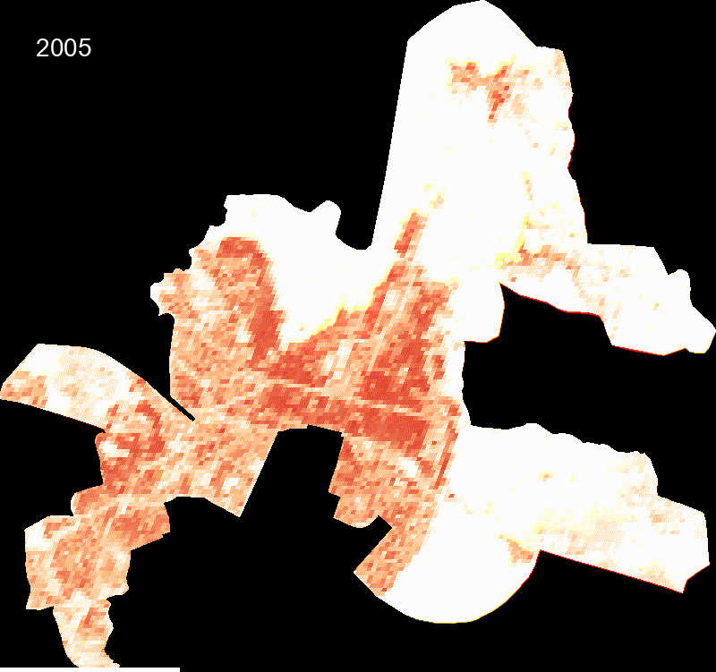
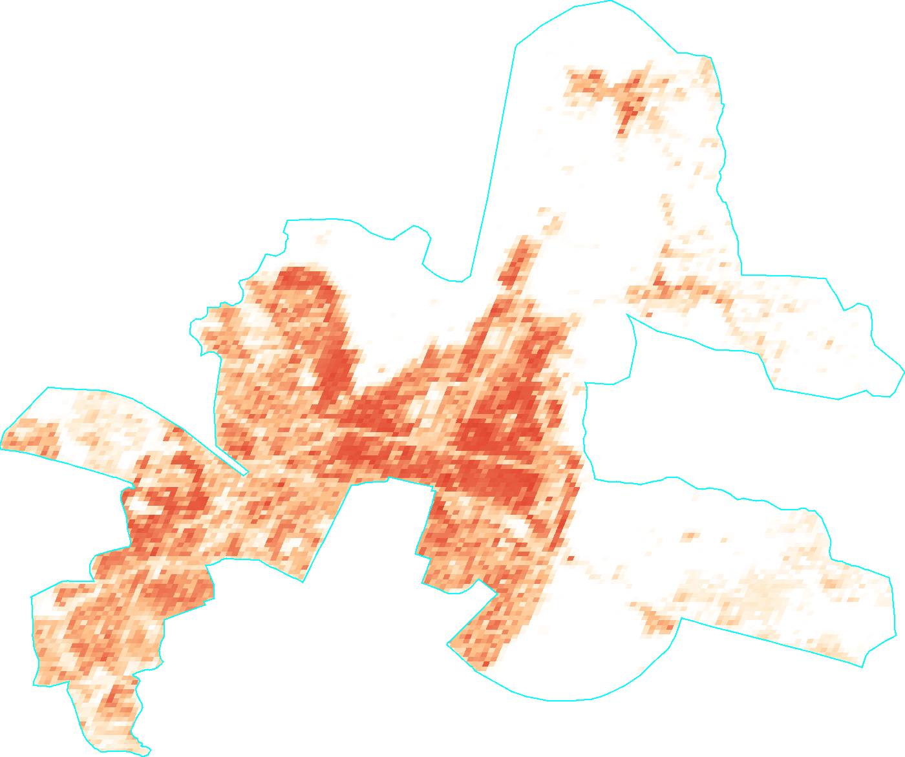
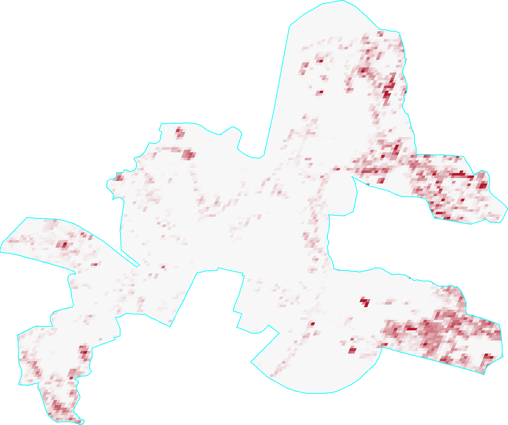
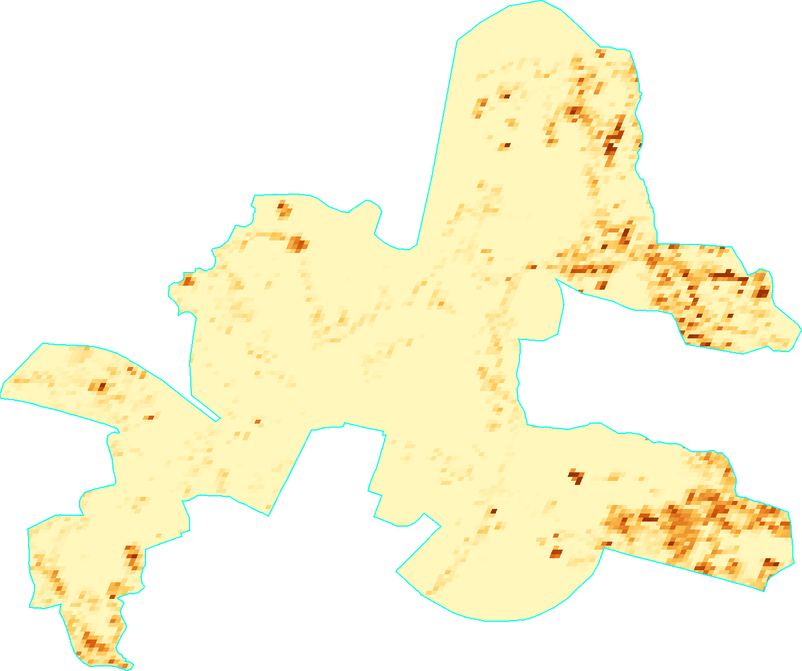
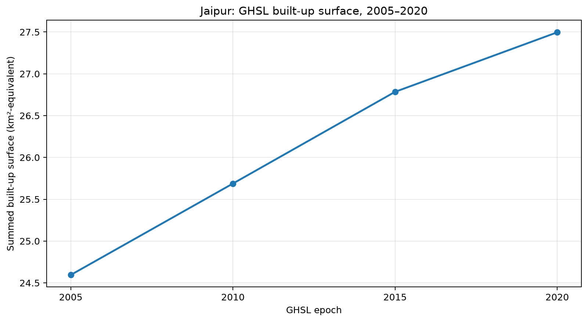

About this analysis
Assignment: Map the spatial expansion of built-up surface relative to the 2005 footprint.
This portfolio presents the Question 2 GHSL built-up-surface analysis for the Jaipur Urban Local Body using four five-year epochs: 2005, 2010, 2015 and 2020.
1. Interactive time-slider map
Use the time slider to compare the GHSL built-up surface across the 2005, 2010, 2015 and 2020 epochs.
2. Temporal animation

3. Built-up surface maps by epoch

4. Spatial change relative to the 2005 footprint


5. Dedicated positive-expansion map
Question 2 focus: This map isolates the locations where mapped built-up surface increased between the 2005 baseline and 2020. Only positive differences are retained; cells with zero or negative change are shown as no expansion.
Interactive positive-expansion map
Use the interactive map below to pan, zoom, inspect the layer, and view the spatial pattern of positive expansion.
Open interactive positive-expansion map in a new tab ↗
6. Numerical summary
| year | built_surface_km2_equivalent | change_from_2005_km2_equivalent | percent_change_from_2005 |
|---|---|---|---|
| 2005 | 24.60 | 0.00 | 0.00 |
| 2010 | 25.69 | 1.09 | 4.44 |
| 2015 | 26.78 | 2.19 | 8.90 |
| 2020 | 27.50 | 2.90 | 11.79 |

7. Formulas and numerical calculations
The following equations show exactly how the numerical results in this analysis are calculated from the GHSL built_surface values.
5.1 Convert built-up surface from m² to km²-equivalent
Why 1,000,000? 1 km = 1,000 m, therefore 1 km² = 1,000 × 1,000 = 1,000,000 m².
B2005 = 24,595,251 m²
24,595,251 ÷ 1,000,000 = 24.60 km²-equivalent
5.2 Absolute change from 2005 to 2020
27.50 − 24.60 = 2.90 km²-equivalent
Using square metres:
27,496,200 − 24,595,251 = 2,900,949 m²
5.3 Percentage change relative to the 2005 baseline
27.50 − 24.6024.60 × 100 = 11.79%
5.4 Net spatial change per 100 m grid cell
Here i represents an individual 100 m × 100 m GHSL grid cell. A positive value means mapped built-up surface increased in that cell; a negative value means it decreased.
5.5 Positive expansion only
This keeps only positive changes and sets negative changes to zero.
Δi = 7,000 − 4,000 = +3,000 m²
Therefore Ei = 3,000 m².
Δi = 5,000 − 7,000 = −2,000 m²
Therefore Ei = max(−2,000, 0) = 0 m².
8. Methodology
This study uses the Global Human Settlement Layer (GHSL) built-up surface product accessed in Google Earth Engine through JRC/GHSL/P2023A/GHS_BUILT_S. The built_surface band represents square metres of built-up surface per 100 m grid cell. The 2005, 2010, 2015 and 2020 epoch images were clipped to the JAIPUR Urban Local Body selected from the SBM_ULBs dataset.
The same boundary, band, nominal scale and visualization range were used for all epochs. Net change was calculated as 2020 minus 2005, and positive expansion was isolated by setting negative differences to zero.
9. Results and discussion
The GHSL results show a clear overall increase in mapped built-up surface within the Jaipur ULB between 2005 and 2020. The summed built-up surface rose from approximately 86.13 km2-equivalent in 2005 to 121.50 km2-equivalent in 2020, an increase of approximately 35.37 km2-equivalent, or 41.06%.
The intermediate epochs also show continued growth: 100.32 km2-equivalent in 2010 and 114.44 km2-equivalent in 2015. The positive-expansion map identifies locations where mapped built-up surface increased relative to the 2005 baseline. Directional claims should be made only from the rendered map.
10. Limitations
- Five-year epochs do not provide annual construction dates.
- 100 m spatial resolution is not a building-footprint inventory.
built_surfaceis built-up surface within grid cells, not individual building footprints.- Statistics depend on the selected Jaipur ULB boundary.
- Differences can include estimation/classification uncertainty.
- The difference map does not establish the exact date, cause, or type of development.
11. Data acknowledgement
Global Human Settlement Layer (GHSL), European Commission Joint Research Centre, GHS-BUILT-S R2023A. Jaipur ULB boundary: SBM_ULBs from ramSeraph/indian_admin_boundaries, urban release.